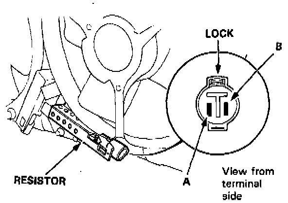

Coupe
Radiator Fan Resistor:

Condenser Fan Resistor:

Resistor Test
1. Disconnect the 2-P connector from the resistor.
2. Using an ohmmeter, measure resistance between the A and B terminals. Replace the resistor if the resistance is not within specifications.
NOTE: Resistance will vary with the resistor temperature; specifications are at 20°C (70° F).
Radiator Fan Resistor
Resistance: 1.3-1.7 ohms
Condenser Fan Resistor
Resistance: 0.5-0.7 ohms